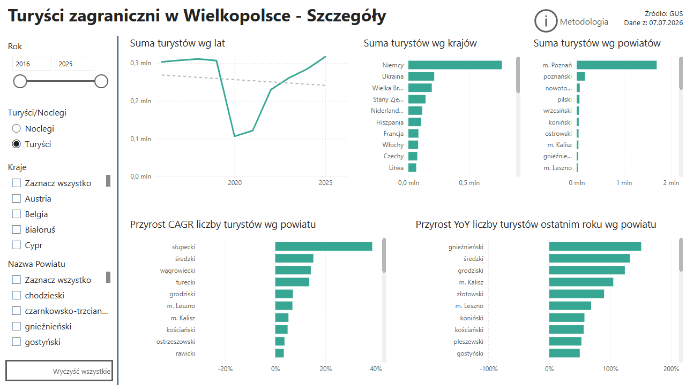
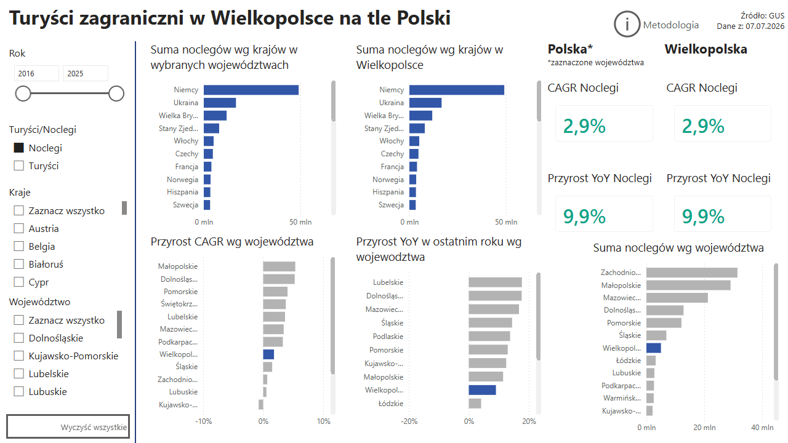
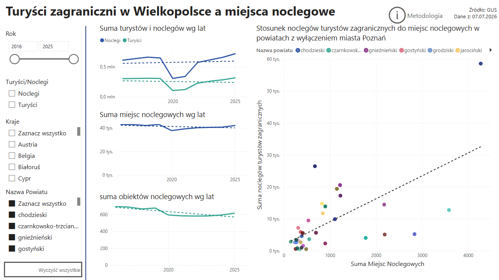
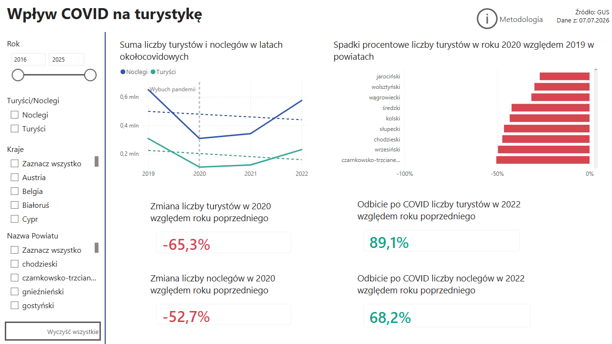
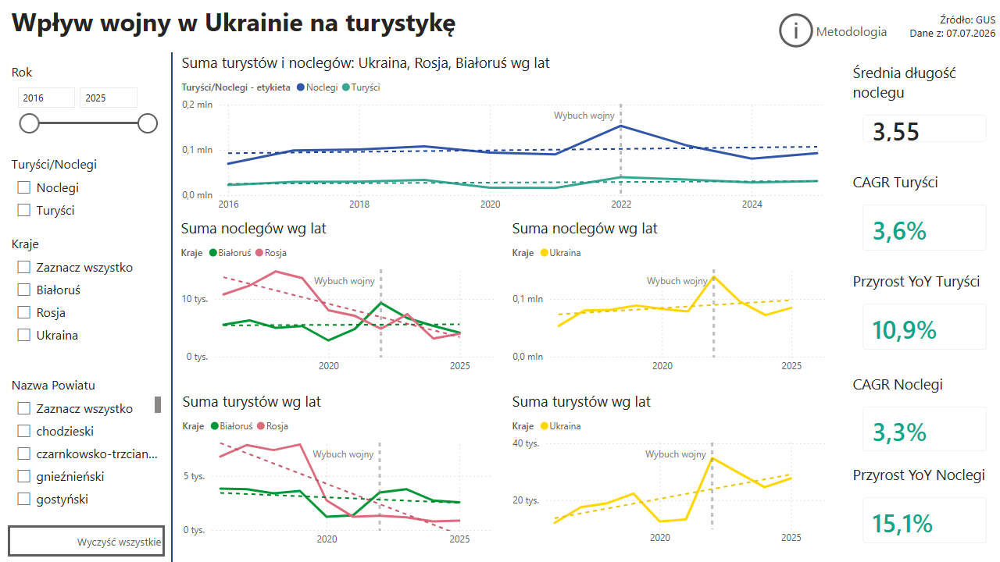
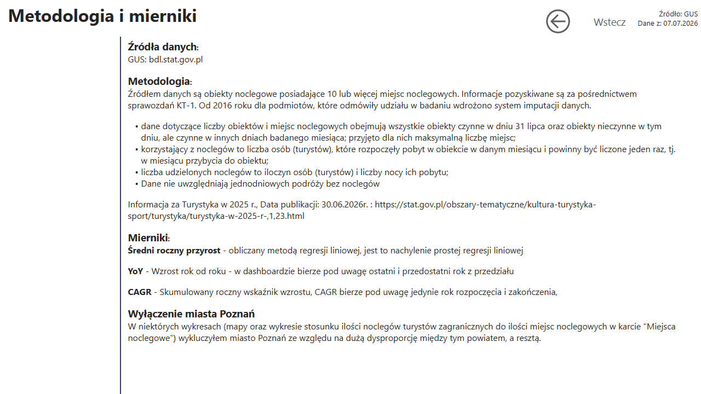
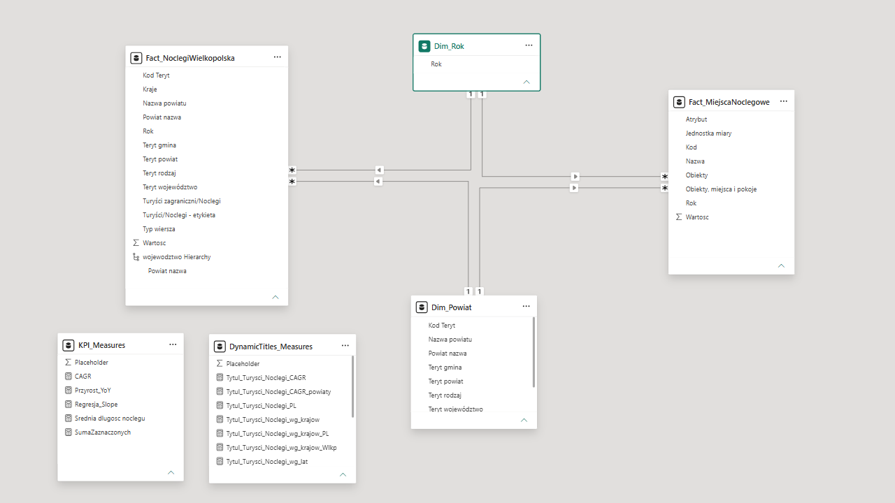

Klub języka danych - turystyka zagraniczna w Polsce
Projekt wykonany w ramach Klubu Języka Danych, w którym co dwa miesiące realizuję
zadania analizy danych i wdrażam feedback od organizatorki i społeczności.
Zadanie lipcowe polegało na analizie zagranicznego ruchu turystycznego w Polsce.
Wykonałem dashboard eksploracyjny dla analityków urzędu marszałkowskiego do określenia
powiatów z największym potencjałem czy najchętniej odwiedzających nas narodowości.
Miary KPI zmieniają się adekwatnie do zaznaczonych filtrów - dzięki temu można szybko
porównać np. dwa powiaty. Zastosowałem również formatowanie warunkowe, aby szybko ocenić
KPI (czy mamy trendy wzrostowe czy spadkowe).
Najważniejsze elementy
- Obrobiłem dane z GUS - wyszczególniłem dane z powiatów, tak aby liczby się nie dublowały, usunąłem sumy, wyszczególniłem miasta na prawach powiatu
- Rozbiłem kod teryt, aby uzyskać informację o województwie
- Dodałem tabelę na temat obiektów noclegowych i powiązałem ją z tabelą liczby turystów za pomocą kodu TERYT
- Model danych oparłem o strukturze gwiazdy z tabelami faktów i wymiarów, dla czytelności metryki również są w osobnych tabelach
- Użyłem metryk do KPI, uwzględniających zmianę filtra
- Wykorzystałem miary: CAGR (do pokazania trendu długoterminowego i odfiltrowania skoku związanego z pandemią), YoY (zmiana w ostatnim roku), czy nachylenie regresji liniowej
- Wykorzystałem dostępne na licencji MIT pliki Geojson do czytelniejszego geograficznego zobrazowania różnic w regionie
- Łączę mapę za pomocą nazw województwa i powiatu wg hierarchii
- Zastosowałem spójną kolorystykę w całym projekcie - noclegi na niebiesko, a turyści na zielono
- W porównaniu Wielkopolski na tle Polski inne województwa są wyszarzone, żeby pokierować uwagę odbiorcy
- KPI mają kolor formatowany warunkowo (zielony - wzrosty, czerwony - spadki), dodatkowo tytuły wykresów są w określonych miejscach zmieniane dynamicznie
Wnioski
- Wielkopolska znajduje się na środku stawki, jeśli chodzi o turystów czy wzrost, choć w latach 2016-2025 i w ostatnim roku ruch turystów zagranicznych przyrastał wolniej niż średnia krajowa
- Najchętniej Wielkopolskę odwiedzają Niemcy, Ukraińcy (nie mówimy tu oczywiście o "turystach"), Amerykanie i Brytyjczycy
- Powiaty, które najlepiej rozwinęły się w ciągu ostatnich 10 lat to Słupecki i Średzki, warto sprawdzić, dlaczego tak się stało
- Dopiero po 4 latach udało wrócić do poziomu noclegów sprzed pandemii
- Wojna w Ukrainie zwiększyła ilość gości z Ukrainy (nie można tu mówić o "turystach"), trend turystów z Rosji czy Białorusi był i tak spadkowy
Repozytorium
Strony dashboardu







